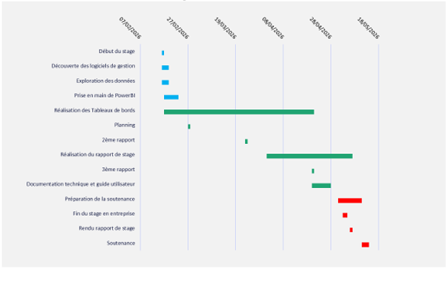
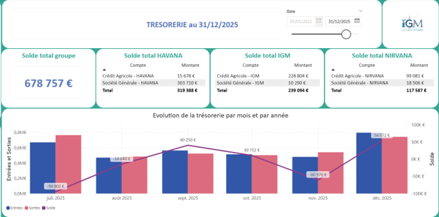
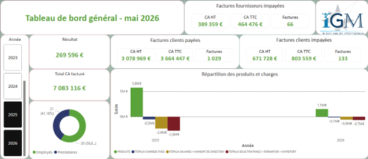
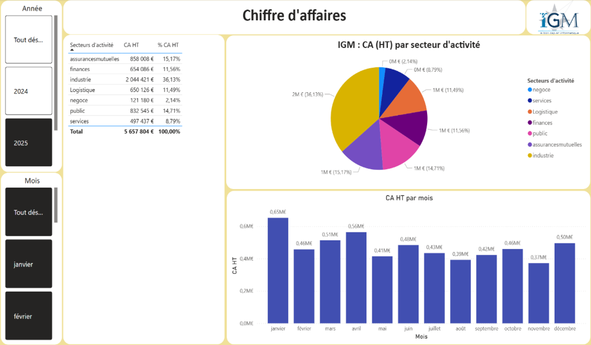

Le stage en chiffres
Compétences mobilisées
Power BI & DAX
Création de rapports dynamiques multi-pages avec formules DAX avancées (DSO, agrégations conditionnelles, mesures calendaires).
API REST & ETL
Connexion et extraction de données depuis les APIs de BoondManager et Pennylane (Amazon Redshift) via Power Query.
Modélisation BI
Architecture en mode Import avec moteur VertiPaq, centralisation des transformations dans Power Query pour optimiser les performances.
Gestion & Comptabilité
Découverte des processus financiers d'une ESN : facturation, trésorerie, délais de paiement (DSO), chiffre d'affaires, suivi des régiés.
Présentation de l'entreprise
🏢 IGM — Informatique Gestion Management
ESN (Entreprise de Services Numériques) fondée en 1993, basée à Saran (Loiret, 45), au cœur de la métropole d'Orléans. En 2022, IGM s'est rapprochée de Havana IT & Apps pour former un nouveau groupe (holding NIRVANA).
L'entreprise compte une trentaine de salariés et réalise un chiffre d'affaires d'environ 6 millions d'euros annuels.
Membre de Fastor GIE, du GEP45 et de la Digital Loire Valley.
🛠️ Services proposés
- Forfait : projets au périmètre défini, développement depuis le centre de Saran.
- Régie : consultants IGM en mission chez le client.
- TMA : Tierce Maintenance Applicative (corrective, évolutive, préventive).
- Formations Qualiopi : certifiée depuis 2021 (logiciel MyReport).
Contexte & Problématique
Situation initiale : Les tableaux de bord financiers d'IGM étaient entièrement réalisés sur Excel, avec des exports manuels depuis les logiciels de gestion (Pennylane, BoondManager, Saffran). Ce processus était très chronophage, sujet aux erreurs de saisie et difficile à maintenir.
Outils de gestion utilisés chez IGM :
Ma mission : Créer un système de reporting semi-automatisé sous Power BI, connecté aux APIs des logiciels de gestion, pour fournir à la direction des KPI fiables et actualisés en temps réel — sans ressaisie manuelle.
Enjeu futur : Les tableaux de bord pourront être étendus aux deux autres entités du groupe (Havana IT & Apps et NIRVANA) selon les besoins.
Architecture technique & Sources de données
Pennylane
Connexion Direct Connect vers un cluster Amazon Redshift (lecture seule). Extraction du grand livre (general_ledger) et de la balance générale (trial_balance) pour les calculs de trésorerie et de résultat.
⚠️ Limite : les données au-delà de 2 ans nécessitent l'import du FEC (Fichier des Écritures Comptables).
BoondManager
API REST avec authentification Basic Auth (email + mot de passe encodé en base 64). Création d'une fonction Power Query réutilisable pour simplifier l'import de chaque table.
Tables : Resources, Orders, Projects, Companies, Invoices, Times, Times-reports, Delivery
Saffran & Excel
Saffran utilisé uniquement pour les données du Bilan Pédagogique (table Bill). Un fichier Excel complémentaire permet la saisie des données non accessibles via API (reports à nouveau, collaborateurs, produits/charges).
Choix d'architecture : Mode Import (VertiPaq) — les données sont compressées en mémoire pour garantir une réactivité optimale des visuels. L'ensemble de l'ETL (typage, concaténations, jointures) est centralisé dans Power Query pour faciliter la maintenance et optimiser la compression colonne.
Visuels des tableaux de bord réalisés
Diagramme de Gantt — Planification du stage

Planification : Suivi prévisionnel et réel du planning de stage sur les 12 semaines d'implication.
Dashboard Trésorerie — Suivi consolidé des entités (IGM, HAVANA, NIRVANA)

Dashboard Trésorerie : Suivi du solde consolidé des 3 entités du groupe avec évolution mensuelle des entrées/sorties. Solde au 31/12/2025 : 678 757 €.
Tableau de bord général (Vue de synthèse)

Vue Synthèse : Indique les chiffres d'affaires HT et TTC facturés, les encours clients et fournisseurs, et le suivi global de l'activité.
Dashboard Chiffre d'affaires — Répartition sectorielle

Analyse CA : Répartition du chiffre d'affaires par secteur d'activité (industrie, commerce, services) et suivi des évolutions par mois et années.
Déroulement du stage
Un diagramme de Gantt a été établi avant le début du stage pour cadrer les phases du projet. Il a globalement été respecté sur les 12 semaines.
Phase 1 — Prise en main & Diagnostic (semaines 1-2)
Intégration dans le service comptable. Découverte des outils existants (Pennylane, BoondManager, Saffran). Test initial de MyReport (abandonné). Identification des besoins et définition du périmètre des KPI.
Phase 2 — Connexion aux sources de données (semaines 3-4)
Mise en place des connexions API (Pennylane via Amazon Redshift, BoondManager via REST). Création des fonctions Power Query réutilisables. Construction du modèle de données (mode Import, ETL centralisé).
Phase 3 — Développement des tableaux de bord (semaines 5-10)
Développement itératif des 5 tableaux de bord thématiques. Tests sur base de données de recette avant bascule en production. Formules DAX avancées (DSO, scores de risque, agrégations conditionnelles).
Phase 4 — Documentation & Livraison (semaines 11-12)
Rédaction d'une documentation technique complète (guide d'utilisation, schémas relationnels en annexe). Présentation à la direction et aux utilisateurs finaux (comptable, assistante d'agence, commerciaux). Livraison des fichiers Power BI.
Bilan & Perspectives
Apports pour l'entreprise :
- Élimination des saisies manuelles chronophages sur Excel.
- KPI fiables et actualisés disponibles en quelques clics.
- Meilleure visibilité sur la trésorerie, les délais de paiement (DSO) et la rentabilité par commercial.
- Détection automatique des anomalies de synchronisation entre BoondManager et Pennylane.
- Extensible aux entités Havana IT & Apps et NIRVANA si nécessaire.
Apports personnels :
Ce stage m'a permis d'approfondir Power BI et l'intégration via APIs REST dans un contexte professionnel réel. J'ai découvert la comptabilité et la gestion d'une ESN, et renforcé ma capacité à concevoir des solutions de BI adaptées aux besoins métier.
Cette expérience confirme mon intérêt pour me spécialiser dans la cartographie et l'analyse spatiale.